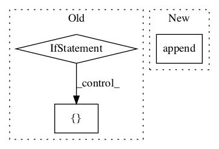

f360de0fa4454122d665b9c32f4d5911a4ebec0c,niftynet/layer/loss.py,LossFunction,layer_op,#LossFunction#Any#Any#Any#Any#,32

Before Change
if self._num_classes > 0:
pred = tf.reshape(pred, [-1, self._num_classes])
label = tf.reshape(label, [-1])
if self._loss_func_params:
data_loss = self._data_loss_func(pred,
label,
**self._loss_func_params)
else:
list_prediction.append(
tf.reshape(prediction, [-1, self._num_classes]))
if weight_map is not None:
weight_map = tf.reshape(weight_map, [-1])
data_loss = 0
After Change
pred, ground_truth, weight_map,
**self._loss_func_params))
else:
data_loss.append(self._data_loss_func(
pred, ground_truth, weight_map))
return tf.reduce_mean(data_loss)
def generalised_dice_loss(prediction,
In pattern: SUPERPATTERN
Frequency: 3
Non-data size: 3
Instances
Project Name: NifTK/NiftyNet
Commit Name: f360de0fa4454122d665b9c32f4d5911a4ebec0c
Time:
Author: null
File Name: niftynet/layer/loss.py
Class Name: LossFunction
Method Name: layer_op
Project Name: tensorflow/lattice
Commit Name: 1c75176947730de8322acf6ad996096625e92e3a
Time:
Author: null
File Name: tensorflow_lattice/python/rtl_layer.py
Class Name: RTL
Method Name: call
Project Name: IndicoDataSolutions/finetune
Commit Name: bd18db469c937fcfe0ea1835784ce10147780c7c
Time:
Author: null
File Name: finetune/base_models/bert/encoder.py
Class Name: BERTEncoder
Method Name: _encode